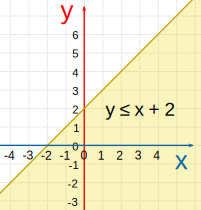
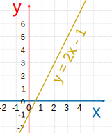
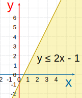
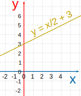
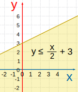
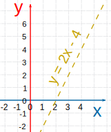
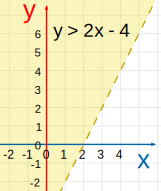
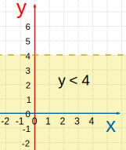
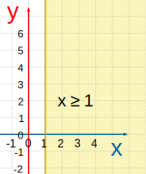

Graphing Linear Inequalities
This is a graph of a linear inequality:

The inequality y ≤ x + 2
You can see the y = x + 2 line, and the shaded area is where y is less than or equal to x + 2
Linear Inequality
A Linear Inequality is like a Linear Equation (such as y = 2x+1) ...
... but it will have an Inequality like <, >, ≤, or ≥ instead of an =.
How to Graph a Linear Inequality
First, graph the "equals" line, then shade in the correct area.
There are three steps:
- Rearrange the equation so "y" is on the left and everything else on the right.
- Plot the "y=" line (make it a solid line for y≤ or y≥, and a dashed line for y< or y>)
- Shade above the line for a "greater than" (y> or y≥)
or below the line for a "less than" (y< or y≤).
Let us try some examples:
Example: y≤2x-1
1. The inequality already has "y" on the left and everything else on the right, so no need to rearrange
2. Plot y=2x-1 (as a solid line because y≤ includes equal to)

3. Shade the area below (because y is less than or equal to)

Example: 2y − x ≤ 6
1. We will need to rearrange this one so "y" is on its own on the left:
2. Now plot y = x/2 + 3 (as a solid line because y≤ includes equal to)

3. Shade the area below (because y is less than or equal to)

Example: y/2 + 2 > x
1. We will need to rearrange this one so "y" is on its own on the left:
2. Now plot y = 2x − 4 (as a dashed line because y> does not include equals to)

3. Shade the area above (because y is greater than)
 2x - 4 " />
The dashed line shows that the inequality does not include the line y=2x-4.
Two Special Cases
You could also have a horizontal or vertical line:
|  | =1" /> |
| This shows where y is less than 4 (from, but not including, the line y=4 on down) Notice that we have a dashed line to show that it does not include where y=4 |
This one doesn't even have y in it! It has the line x=1, and is shaded for all values of x greater than (or equal to) 1 |